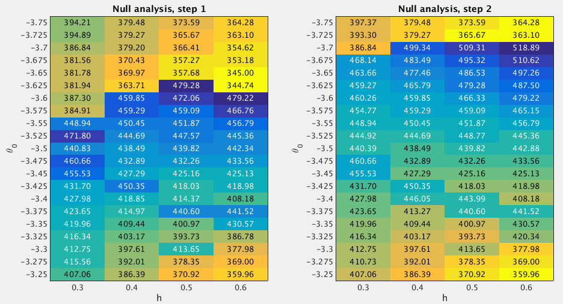

19.2 GSEA Round 2
Last updated: 2016-10-11
Code version: d756fef8b3571b3c4128611200e3e4b68c6b3185
19.2.1 Fit the null model
From the Round 1 null analysis (Section 7.1), I found that almost 99.9% posterior mass is concentrated on the settings theta0=-3.5 and h=(0.3:0.1:0.6)'. In Round 2, I used a finer grid. Specifically, I used the grids theta0=(-3.75:0.025:-3.25)' and h=(0.3:0.1:0.6)' when fitting the null model. I estimated the (unnormalized) log importance weights (“pseudo-likelihoods”) for all 84 sets of (h,theta0) under null.

After normalizing the log “pseudo-likelihoods” (logw.step*) to posterior probabilities (posp.step*), we can see that almost 99.97% of the posterior mass is concentrated on the settings theta0=(-3.7:0.025:-3.6)' and h=(0.5:0.1:0.6)'.
h.index <- as.character(null.df$h) %in% as.character(c(0.5,0.6))
theta0.index <- as.character(null.df$theta0) %in% as.character(seq(-3.7,-3.6,by=0.025))
sum(null.df$posp.step1[intersect(theta0.index, h.index)]) ## [1] 0.9996216sum(null.df$posp.step2[intersect(theta0.index, h.index)]) ## [1] 0.999674919.2.2 Fit the enrichment model
To perform GSEA, I set theta0=(-3.7:0.025:-3.6)' and h=(0.5:0.1:0.6)', since the null analysis suggests that almost 99.97% of the posterior mass is placed on these settings. For the log-fold enrichment parameter, I use the grid theta = (0:(3.5/100):3.5)'. The following table lists the GSEA results.
gsea.path <- "~/Dropbox/rss/Data/rbc_2012/pathway/rbc2012_pathway_201609.mat"
gsea.df <- gsea.mat2df(gsea.path) source("src/gsea_dt.R")
gsea.dt